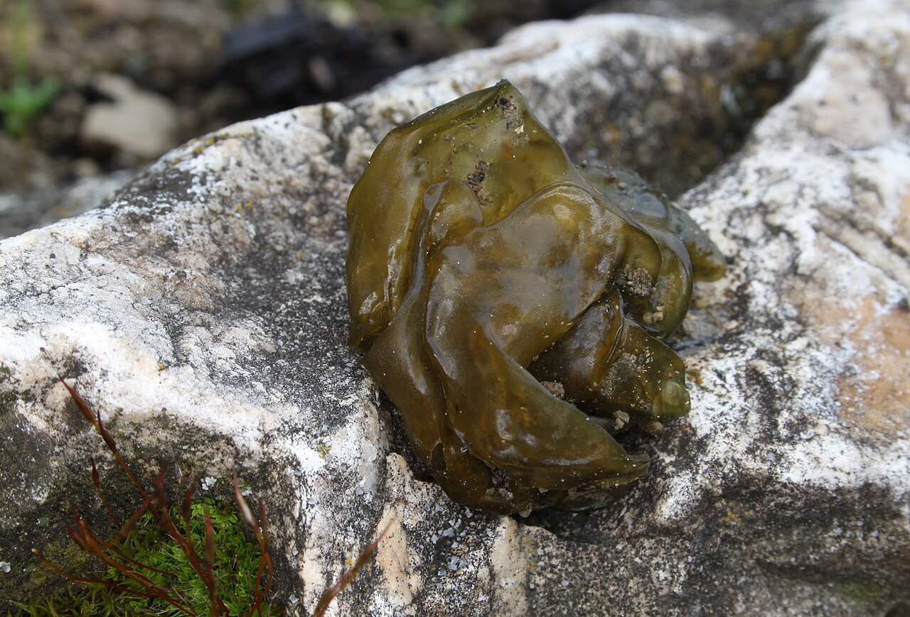

细胞的多样性和统一性
本期导读
高倍显微镜 · 原核细胞 · 真核细胞

视频原话 · 导读3 句
- 同学们好！这节课梳理人教版必修一第一章第二节——细胞的多样性和统一性。7.7s
- 高考常考高倍显微镜的使用和相关计算，以及原核细胞与真核细胞的比较。7.4s
- 我们按七个考点梳理，每个考点都讲清楚怎么考、怎么做。5.6s
高倍镜的使用01#
- 1找在低倍镜下找到要观察的物像
- 2移把物像移到视野中央
- 3转转动转换器，换上高倍物镜
- 4调视野变暗：调大光圈或换凹面镜；再调细准焦螺旋至物像清晰
易错
换高倍镜前不升高镜筒；换高倍镜后只能调细准焦螺旋，不能再动粗准焦螺旋
视频原话4 句
- 考点一，高倍显微镜的使用。第一步，先在低倍镜下找到要观察的物像。7.4s
- 第二步，把物像移到视野中央；第三步，转动转换器，换上高倍物镜。6.9s
- 第四步，视野变暗时调大光圈或换凹面镜，再转动细准焦螺旋，直到物像清晰。8.0s
- 易错：换高倍镜前不用升高镜筒，换高倍镜后不能再动粗准焦螺旋。7.2s
显微镜成像特点02#
p
装片上的实物
旋转
180°
180°
→
p
视野中的物像
放大倍数 ＝ 目镜倍数 × 物镜倍数
放大的是物体的长度或宽度，不是面积
解题方法
移装片：偏哪移哪；由物像判断实物：把图旋转 180°（上下、左右都颠倒）
视频原话4 句
- 考点二，显微镜成像的特点。显微镜成的是放大的倒像，相当于把图像旋转180度。8.9s
- 所以物像在视野的左下方，实际物体在右上方；要把物像移到中央，装片要向左下方移动。8.7s
- 放大倍数等于目镜倍数乘物镜倍数，指的是物体长度或宽度的放大，不是面积。7.7s
- 解题方法：移装片记住“偏哪移哪”；判断实物形状时，把图像旋转180度。7.7s
视野中细胞数计算03#
物镜由 10× 换成 40×：放大倍数变为原来的 4 倍
解题方法
放大 n 倍：排成一行的细胞数 ÷ n；充满视野的细胞数 ÷ n2（面积放大 n2 倍）
视频原话4 句
- 考点三，放大倍数改变后视野中细胞数目的计算。分两种情况。6.9s
- 细胞排成一行：放大倍数变为原来的4倍，看到的细胞数变为原来的四分之一。比如8个变成2个。9.9s
- 细胞充满视野：长和宽都放大4倍，面积放大16倍，细胞数变为十六分之一。比如64个变成4个。10.8s
- 解题方法：放大n倍，一行的除以n，充满视野的除以n的平方。6.2s
原核与真核的区别04#
| 比较项目 | 原核细胞 | 真核细胞 |
|---|---|---|
| 细胞核 | 无以核膜为界限的细胞核 | 有成形的细胞核 |
| DNA | 拟核区，裸露的环状 DNA，无染色体 | 与蛋白质结合成染色体（质） |
| 细胞器 | 只有核糖体 | 线粒体、叶绿体、内质网等多种 |
| 细胞壁 | 细菌有，主要成分是肽聚糖 | 植物：纤维素和果胶；动物无 |
易错
根本区别是有无以核膜为界限的细胞核，不是有无细胞壁；细菌和植物都有细胞壁，但成分不同
视频原话4 句
- 考点四，原核细胞与真核细胞。两者最根本的区别：有无以核膜为界限的细胞核。8.7s
- 原核细胞没有成形的细胞核，DNA集中在拟核区域，是裸露的环状DNA，不形成染色体。9.0s
- 原核细胞只有核糖体一种细胞器；真核细胞有线粒体、叶绿体、内质网等多种细胞器。8.6s
- 易错：有无细胞壁不是区别——细菌也有细胞壁，但成分是肽聚糖，植物细胞壁是纤维素和果胶。9.3s
常见的原核生物05#
细菌
球菌、杆菌、螺旋菌
如大肠杆菌、乳酸菌
如大肠杆菌、乳酸菌
多数为异养生物
蓝细菌
色球蓝细菌、颤蓝细菌、念珠蓝细菌、发菜
无叶绿体，含藻蓝素和叶绿素，能光合作用，是自养生物
支原体
没有细胞壁
可能是最小、最简单的单细胞生物
易错
能光合作用不一定有叶绿体（蓝细菌）；水华是蓝细菌等大量繁殖造成的
视频原话5 句
- 考点五，常见的原核生物。第一类是细菌：球菌、杆菌、螺旋菌，比如大肠杆菌、乳酸菌。9.5s
- 第二类是蓝细菌：色球蓝细菌、颤蓝细菌、念珠蓝细菌，还有发菜。7.1s
- 蓝细菌没有叶绿体，但含有藻蓝素和叶绿素，能进行光合作用，是自养生物。7.5s
- 还有支原体，它没有细胞壁，课本说它可能是最小、最简单的单细胞生物。7.2s
- 易错：能光合作用的不一定有叶绿体，蓝细菌就是例子；水体富营养化时的“水华”，就有蓝细菌大量繁殖。10.2s
原核与真核统一性06#
细胞膜
都有
细胞质
都有
核糖体
合成蛋白质的场所
DNA
遗传物质都是 DNA
体现了细胞的统一性，也说明不同生物之间存在亲缘关系
解题方法
问共同点，就答四个“都有”：细胞膜、细胞质、核糖体、DNA
视频原话4 句
- 考点六，原核细胞与真核细胞的统一性。它们都有细胞膜和细胞质。6.8s
- 都有核糖体这种细胞器，用来合成蛋白质。4.5s
- 遗传物质都是DNA。这体现了细胞的统一性，也说明生物之间存在亲缘关系。8.0s
- 考法：问原核细胞和真核细胞的共同点。解题方法：记住四个“都有”——膜、质、核糖体、DNA。10.3s
易混生物辨析07#
原核生物
细菌：杆菌、球菌、弧菌、螺旋菌，乳酸菌
蓝细菌（含发菜）
支原体
真核生物
真菌：酵母菌、霉菌、蘑菇
绿藻和植物：衣藻、水绵、黑藻
动物、原生动物
病毒
没有细胞结构
既不是原核生物，也不是真核生物
解题方法
先排除病毒，再看有没有成形的细胞核；带“菌”字的不一定是细菌
视频原话5 句
- 考点七，易混生物辨析。名字带“菌”的不一定是细菌：酵母菌、霉菌和蘑菇都是真菌，属于真核生物。10.2s
- 名字里带杆、球、弧、螺旋的菌，以及乳酸菌，才是细菌，属于原核生物。7.9s
- 衣藻、水绵、黑藻这些绿藻和植物是真核生物，而蓝细菌是原核生物。7.6s
- 病毒没有细胞结构，既不是原核生物，也不是真核生物。5.4s
- 解题方法：先排除病毒，再看有没有成形的细胞核；记住常见的几种真菌和蓝细菌就够用了。8.9s
易错速查✓
先自己判断，再点按钮查看对错与解析。
- 1换用高倍镜后视野变暗，应调粗准焦螺旋说法错误：应调大光圈或换凹面镜；高倍镜下只能调细准焦螺旋
- 2物像在视野右上方，应将装片向右上方移动说法正确。
- 3原核细胞与真核细胞的根本区别是有无细胞壁说法错误：根本区别是有无以核膜为界限的细胞核
- 4蓝细菌没有叶绿体，所以不能进行光合作用说法错误：含藻蓝素和叶绿素，能进行光合作用
- 5原核细胞和真核细胞都有核糖体和DNA说法正确。
- 6酵母菌、乳酸菌都属于原核生物说法错误：酵母菌是真菌，属于真核生物
先看有没有成形的细胞核！
视频原话 · 易错速查5 句
- 最后，用六道判断题检验一下。3.6s
- 判断一？错，应调光圈或反光镜，只能用细准焦螺旋。判断二？对，偏哪移哪。9.6s
- 判断三？错，根本区别是有无以核膜为界限的细胞核。判断四？错，蓝细菌能光合作用。10.4s
- 判断五？对。判断六？错，酵母菌是真核生物。6.5s
- 七个考点串成一条线：先看有没有成形的细胞核。我们下期再见！6.6s
图片来源
图片来源：Wikimedia Commons —— Holger Krisp《Cyanobacteria Nostoc commune》CC BY 3.0
Photo: Holger Krisp, CC BY 3.0